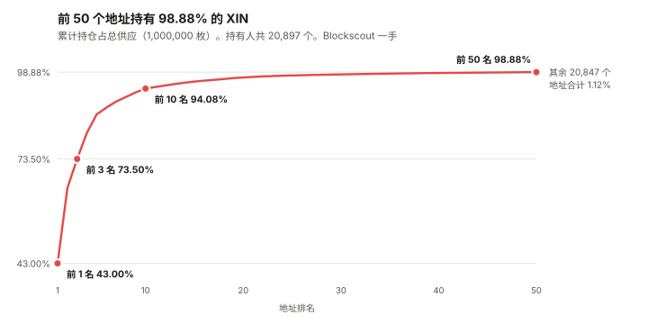
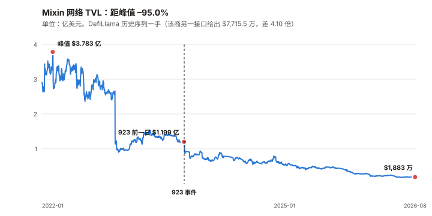

XIN / Mixin 完整调研与分析报告
编写日期：2026 年 9 月 7 日
数据截止：2026 年 9 月 7 日（8 月完整月度数据已闭合）
研究方法：沿用本系列前八期框架（BTC / ETH / SOL / ADA / BNB / HYPE / UNI / TRX）。
本期的独特之处：XIN 是本系列覆盖的第九个资产，也是第一个自始就判定「无法给出目标价」的资产
（HYPE 期是发布后撤回，性质不同）。
本报告不给目标价，理由收窄为一条：公司的业务经济性不可观测（营收、AUM、债务余额均无可验证披露）。
自由流通盘未知与报价噪声是加重情节，但它们阻止的是「可执行性」，不是「可估值性」。
本期为 XIN 首期报告。本期核心发现：
① 供应：自由流通盘未知，但有可辩护的边界。 CoinGecko 对 XIN 的市值与流通量都报 0。
链上（本报告直接调用以太坊主网 RPC）总量恰好 1,000,000 枚，
而前 3 个多签地址持有 73.50%，前 50 个地址持有 98.88%。
自由流通盘上界 234,000 枚，可观测确在交易的约 28,829 枚（含一个 17,618 枚的 DEX 池）；
② 价格层：价格不是一个可用的测量。 8 月日成交额中位数 $10,878、最低 $2,207；
过去一年有 17 天单日涨跌超过 20%，含 2026-02-11 的 –57.8% 与次日的 +59.3%。
年化波动率 177.3%（八资产最高的 UNI 是 97.1%），
而与 BTC 的相关系数只有 0.156——R² 仅 2.4%，beta 0.63 没有解释力；
③ 业务经济性不可观测——这是不给目标价的唯一充分理由。 2023-09-23 的 923 事件后，
Mixin 发行了 MDT 债务代币（MDTu / MDTe / MDTb），官方文档写明清偿次序与还款来源
（「用持续业务发展的利润偿还债务」）。
本报告未能取得任何一手的债务余额数字，也未找到营收或 AUM 的可验证披露。
⚠️ 一处必须写在前面的更正：初稿把 XIN 描述成「排在三档债务之后的剩余索取权」，这是类别错误。
XIN 是网络代币，本报告没有找到任何文件赋予它对公司利润或清算剩余的请求权（见 6.3）；
但可以给出一个界：MDTu 之后的公司债务约为 XIN 全部 FDV 的 0.76–1.13 倍（见 6.4）；
④ 两个必须写出来的口径分歧：DefiLlama 的两个接口对同一条链给出 $7,715.5 万 与 $1,883.1 万，
相差 4.1 倍；Mixin 官网今天写 10M+ 客户，而 2026 年 2 月媒体引述该公司的说法是「100 万+」；
⑤ 但业务不是死的，这一条必须给足分量：Mixin 在 2026 年持续发布产品——
4 月 U 本位永续合约、4 月 Coinbase 法币通道、5 月闪电网络、8 月银行账户；
并在美国（FinCEN MSB 31000294912795）与波兰（VASP 0001030006）持有公开可查的注册编号。本期核心判断：本报告不给 XIN 目标价，但给出了三条定价路径各自崩在哪一步，
以及当前价格反推出的隐含条件。
剩余索取权法崩在「业务价值」那一侧，在崩之前给出了债务的界（FDV 的 0.76–1.13 倍）；
反推显示当前 $6,800.9 万的 FDV 隐含每年约 $68 万–$680 万的价值分配需求，
而本报告找不到证据判断这个水平是否被满足（见 10.4）。⚠️ 本期审查改动为本系列之最，初稿有三处被推翻：
① 「XIN 排在债务之后」是类别错误，已收回；
② 「三层同时失效」把一个理由数成了三个，且其中「报价噪声」阻止的是交易不是估值，已重构；
③ 链上追溯只拉了第一页却写成「全部历史」——分页拉全后金库年流出从 5,000 枚更正为 15,001 枚。一个 16 天后的检验点：Mixin 承诺 2026-09-23 前还清约 $2,300 万的 MDTu。
⚠️ 本报告三条一手核实路径全部失败，该承诺只有二手来源。免责声明：本报告不构成任何投资建议。所有分析仅供研究参考，投资决策请咨询专业顾问。
核心结论摘要（一页速览）
| 维度 | 核心判断 |
|---|---|
| XIN 是什么 | 一家产品公司的网络代币，不是一条公链的燃料。 Mixin 做的是钱包、比特币托管、跨链路由、法币通道；XIN 用于节点抵押与网络费用 |
| 本期的独特之处 | 本系列第一个自始判定「无法给出目标价」的资产（HYPE 期是发布后撤回）。理由收窄为一条：业务经济性不可观测 |
| 当前价格 | $68.01（CoinGecko 与 Mixin 官方 ticker 一致）。FDV $6,800.9 万。⚠️ 市值无法计算——CoinGecko 的流通量字段为 0 |
| 距 ATH | –96.75%（ATH $2,095.67，2018-01-19）。九个资产里最深（第二深是 ADA 的 –92.86%） |
| 一个必须先讲的事实 | 今天 XIN 上涨 18.5%，而当日成交额约 $1.2–1.7 万。 这个价格不承载信息 |
| 8 月表现 | +9.67%（8/1 $49.43 → 8/31 $54.21）。⚠️ 在这个成交量下，该数字的可信度低于其他八个资产 |
| 成交量的量级 | 8 月日成交中位数 $10,878。倒数第二名 UNI 是 $2.456 亿——XIN 是它的 1/22,580，是 BTC 的约 1/200 万 |
| 供应集中度 | 前 1 名 43.00%、前 3 名 73.50%、前 50 名 98.88%。持有人 20,897 个。自由流通盘上界 234,000 枚，可观测交易盘约 28,829 枚 |
| 金库释放 | 已证明的金库（#2/#3）近 12 个月向运营地址转出 15,001 枚（约 $102 万），相当于 8 月日成交额中位数的 25.7% |
| 销毁的真相 | 链上可见的 31,000 枚销毁发生在 2026-01-06 单日，来自国库多签，不是持续的协议销毁机制（浏览器口径 31,938.64 枚） |
| 业务轨迹 | TVL 从峰值 $3.783 亿（2022-01-20）→ 923 事件前一日 $1.199 亿 → 现在 $1,883 万，距峰值 –95.0% |
| 债务结构 | MDTu → MDTe → MDTb 依次清偿，美元计价，还款来源是营业利润。⚠️ XIN 不在这个次序里——它是网络代币，不是公司资本结构的一层（见 6.3） |
| 可给出的债务界 | MDTu 之后的公司债务约 $5,200 万–$7,700 万，为 XIN 全部 FDV 的 0.76–1.13 倍（⚠️ 三个输入全为二手，但区间两端结论相同） |
| 当前价格隐含什么 | 按现金流口径需年化 $68 万–$340 万归属价值；按节点抵押口径需年化约 $680 万。本报告找不到证据判断是否满足 |
| 核心多头逻辑 | 产品在持续交付（2026 年至少四项）；持有美国 MSB 与波兰 VASP 注册；比特币托管是真实业务；总量硬顶 100 万枚 |
| 核心空头逻辑 | 业务经济性不可观测；剩余债务与整个 FDV 同量级；TVL 距峰值 –95%；金库释放约占日成交的 1/4；黑客 2026-02 仍在洗钱；官方口径前后不一致 |
| 风险等级 | 高。 ⚠️ 初稿写「风险无法被有意义地量化」，已收窄——本报告已经量化了其中数项（债务界、隐含条件、金库释放速率）。未能量化的是业务价值那一项 |
1. Mixin 是什么
1.1 它不是一条公链，是一家产品公司
前八期的资产里，七个是链（BTC / ETH / SOL / ADA / BNB / TRX）或协议（HYPE / UNI）。
Mixin 更接近一家做加密金融产品的公司，而 XIN 是它的网络代币。
公司在官网底部披露了三个注册实体（本报告 2026-09-07 直接抓取）：
| 实体 | 注册地 | 编号 |
|---|---|---|
| Mixin Ltd | 香港，Santai Building, 137-139 Connaught Road | — |
| Mixin Inc | 美国特拉华州 Newark | FinCEN MSB 31000294912795 |
| Mixin Route sp. z o.o. | 波兰华沙 | VASP 0001030006 |
⚠️ 本报告尝试在 FinCEN 的 MSB 注册查询系统中核实该编号，未能完成（查询表单需要交互式提交，
直接请求返回的是空白页面）。这两个编号目前的核实等级是「公司自述」，不是「已验证」。
1.2 产品线
| 产品 | 做什么 |
|---|---|
| Mixin Messenger / 钱包 | 基于 Signal 协议的聊天 + 多币种钱包，MPC 自托管 |
| Mixin Safe | 比特币托管，用 Bitcoin Script 的时间锁做去中心化继承与恢复 |
| Mixin Route | 跨链交易路由 |
| Mixin Cash | 银行账户与稳定币之间的资金进出（2026 年 8 月发布） |
1.3 XIN 的角色
| 角色 | 说明 | 核实等级 |
|---|---|---|
| 节点抵押 | 加入网络成为全节点需抵押至少 10,000 XIN | ⚠️ 二手 |
| 网络费用 | 网络收取的 XIN 罚金与手续费回流至奖励池 | ⚠️ 二手 |
| 总量硬顶 | 1,000,000 枚，无增发 | ✅ 本报告直接调用以太坊主网 RPC 读取 totalSupply()，返回恰好 1,000,000 |
一个需要在这里就点明的矛盾：Mixin 的浏览器 mixin.space 显示 100 个验证者。
若每个节点抵押 10,000 XIN，100 个节点就是 1,000,000 枚——等于全部供应量。
而第 5 章的链上取证显示，供应量并不在节点抵押里，而在三个多签地址里。
本报告无法调和这两件事，只能把两边的观测都摆出来（见 5.6）。
2. XIN 的发展阶段划分
阶段一：ICO 与早期（2017–2018）
2017 年发行，总量 100 万枚。2018-01-19 创下历史最高价 $2,095.67——
这个价格此后再也没有接近过，当前距它 –96.75%。
阶段二：产品建设期（2019–2021）
Mixin Messenger 与多链钱包成型。网络 TVL 在 2022-01-20 达到峰值 $3.783 亿。
阶段三：缓慢下行（2022–2023.9）
TVL 从 $3.783 亿降到 923 事件前一日（2023-09-22）的 $1.199 亿，跌幅 68.3%。
注意：下行在事件之前就已经开始。
阶段四：923 事件与债务化（2023.9–2024）
2023 年 9 月 23 日，攻击者通过 Mixin 依赖的云服务商数据库入侵，构造未授权提现。
| 口径 | 损失金额 |
|---|---|
| Mixin 官方支持文档自述 | 约 $1.5 亿 |
| 媒体普遍报道 | 约 $2 亿 |
⚠️ 两个口径相差 33%，本报告无法判定哪个对，两者都列出。
事件后：存提暂停 → 用户获赔 50% 稳定币，其余转为 MDT 债务代币（见第 6 章）。
TVL 在事件后一周内从 $1.199 亿掉到 $9,256 万，一个月后 $7,701 万。
阶段五：带债经营（2024–至今）
这是本报告的观察窗口。 特征是：
- TVL 继续单向下行至 $1,883 万（2026-08-31），距峰值 –95.0%
- 产品交付没有停：2026 年至少四项新功能上线（见第 7 章）
- 2024 年 12 月，70 万枚 XIN（70% 的总供应）从一个地址转入多签体系（见第 5 章）
- 2026-01-06，国库多签销毁 31,000 枚
- 2026-02-12，黑客地址在沉寂约两年后移动 $385 万 ETH 至 Tornado Cash（⚠️ 二手）
- 2026-02-05 创下历史最低价 $38.63——九个资产里唯一在本报告观察年内创出历史新低的
3. 当前现状
3.1 价格与市场
| 指标 | 数值 | 口径 |
|---|---|---|
| 现价 | $68.01 | CoinGecko，2026-09-07 14:40 UTC |
| 同上（第二来源） | $68 | Mixin 官方 ticker API，本报告直接调用 |
| FDV | $6,800.9 万 | $68.01 × 1,000,000 |
| 市值 | 无法计算 | CoinGecko 的 circulating_supply 与 market_cap 均返回 0 |
| ATH | $2,095.67（2018-01-19） | –96.75% |
| ATL | $38.63（2026-02-05） | 距今 +76.0% |
| 8 月月度（8/1→8/31） | +9.67% | $49.425 → $54.206 |
| 近 1 年 | 约 –42% | 2025-09-07 为 $101.01 |
3.2 成交量：本报告最重要的一张表
| 资产 | 8 月日成交额中位数 | 相对 XIN |
|---|---|---|
| BTC | $217.09 亿 | 1,995,700 倍 |
| ETH | $70.41 亿 | 647,300 倍 |
| SOL | $14.35 亿 | 131,900 倍 |
| BNB | $6.399 亿 | 58,800 倍 |
| ADA | $3.804 亿 | 34,970 倍 |
| TRX | $3.709 亿 | 34,100 倍 |
| HYPE | $3.062 亿 | 28,150 倍 |
| UNI | $2.456 亿 | 22,580 倍 |
| XIN | $10,878 | 1 倍 |
口径声明：全部为 2026 年 8 月日成交额的中位数（不是均值，避免被单日异常拉高），
CoinGecko 一手，九个资产在同一次调用、同一查询窗口内取得。XIN 8 月成交额最低的一天是 2026-08-14 的 $2,207。
3.3 今天发生的事，就是这个问题的例子
2026-09-07，XIN 上涨 18.5%。当日成交额约 $1.2–1.7 万。
在一个日成交一万美元出头的市场里，一笔两千美元的买单就可以推动价格两位数。
这不是「波动大」，这是「价格没有承载信息」。
3.4 宏观环境
| 因素 | 状态（9 月初） | 影响 |
|---|---|---|
| 联邦基金利率 | 3.50–3.75% | — |
| 9 月加息概率 | 65.9%（CME FedWatch，8/31） | 利空 |
| PCE 通胀 | 3.7%（12 个月）/ 4.1%（6 个月） | 支持加息 |
| 10 年期美债 | 4.79% | — |
本节沿用与本系列 TRX / UNI 期同一时点的宏观快照。
但对 XIN 而言，宏观基本没有解释力——第 4.2 节会给出定量证据：
XIN 与 BTC 的日收益相关系数只有 0.156，R² 仅 2.4%。
宏观通过 BTC 传导到山寨币的这条常规路径，在 XIN 身上测不出来。
4. 这个资产能不能被定价（本期核心章之一）
前八期都在回答「它值多少」。本章先回答「用来回答那个问题的工具还在不在」。
结论是三样都不在，而且每一样都有定量证据，不是印象。
4.1 第一层：流通量不可知
任何估值的第一步是「市值 = 价格 × 流通量」。XIN 卡在这一步。
| 观测 | 值 | 来源 |
|---|---|---|
| 总供应量 | 1,000,000 枚（精确） | ✅ 以太坊主网 RPC totalSupply() 直读 |
| Solana 上的镜像供应 | 6,911.48 枚（0.69%） | ✅ Solana RPC getTokenSupply 直读 |
| CoinGecko 报告的流通量 | 0 | ❌ 该字段为空 |
| CoinGecko 报告的市值 | 0 | ❌ 同上 |
| 持有人总数 | 20,897 | ✅ Blockscout |
而分布让「流通量」这个概念本身变得可疑（本报告直接调用 Blockscout 持有人接口）：
| 排名 | 累计占总供应 |
|---|---|
| 前 1 名 | 43.00% |
| 前 3 名 | 73.50% |
| 前 5 名 | 86.54% |
| 前 10 名 | 94.08% |
| 前 20 名 | 97.30% |
| 前 50 名 | 98.88% |
剩下的 20,847 个地址合计持有 1.12%，约 11,212 枚。
第 5.4 节给出了自由流通盘的可辩护边界：
| 口径 | 枚数 |
|---|---|
| 上界（总供应 − 三个多签 − 销毁地址） | 234,000 |
| 收窄（再减两年未动的 13,439 整份额持仓） | 153,365 |
| 可观测确在交易的（DEX 池 + 前 50 名之外） | 28,829 |
⚠️ 初稿在这里写「三个答案相差两个数量级」（0 / 1–2 万 / 100 万），已删除。
CoinGecko 的 0 是缺失值不是候选答案，而「1–2 万」是一个未标注推导的估计。
可辩护的表述是：自由流通盘未知，上界 234,000 枚，可观测交易盘约 28,829 枚——
一个 8 倍的区间，不是 100 倍。
4.2 第二层：价格不是一个可用的测量
过去 365 天，XIN 有 17 天的单日涨跌幅超过 20%（本报告用日对数收益率自行计算）：
| 日期 | 涨跌 | 日期 | 涨跌 |
|---|---|---|---|
| 2026-01-10 | +37.7% | 2026-03-11 | +25.3% |
| 2026-01-18 | +22.8% | 2026-03-12 | –40.1% |
| 2026-01-24 | –20.8% | 2026-03-13 | +60.7% |
| 2026-01-25 | +28.8% | 2026-03-21 | –33.3% |
| 2026-02-06 | –26.0% | 2026-03-22 | +61.0% |
| 2026-02-08 | +31.8% | 2026-03-23 | –17.0% |
| 2026-02-10 | +27.2% | 2026-03-26 | +26.4% |
| 2026-02-11 | –57.8% | 2026-03-28 | –28.4% |
| 2026-02-12 | +59.3% |
2026-02-11 跌 57.8%，第二天涨 59.3%；2026-03-12 跌 40.1%，第二天涨 60.7%。
相邻两天方向相反且幅度接近，是报价噪声的典型特征，不是基本面。
把区间也放出来：过去 365 天的日收盘价，最低 $42.97（2026-02-11）、最高 $101.83（2026-01-18）。
最高是最低的 2.37 倍，而这两天相隔只有 24 天。
同一个资产、同一个季度、没有任何可对应的公司事件。
统计量：
| 指标 | XIN | 前八期的最高/最低 |
|---|---|---|
| 年化波动率 | 177.3% | 最高 UNI 97.1%，最低 TRX 26.6% |
| beta（相对 BTC） | 0.63 | 最高 ADA 1.375，最低 TRX 0.247 |
| 相关系数（相对 BTC） | 0.156 | — |
| R² | 2.4% | — |
这一行是本章最关键的一处，因为它和 TRX 期形成了一组必须区分的对照。
TRX 的 beta 是 0.247，XIN 的 beta 是 0.63——单看 beta，XIN 更「正常」。
但 TRX 的低 beta 是一个特征（业务不依赖加密行情），XIN 的 beta 是一个噪声：
R² 只有 2.4%，意味着 BTC 的波动解释不了 XIN 的 97.6%。「低 beta」有两种来源：真的不相关，和测不出来。前八期没有遇到过第二种。
报告若不区分它们，就会把「无法测量」写成「防御性资产」。
4.3 第三个障碍：公司的业务经济性不可观测
详见第 6 章。这里只给结论：
Mixin 未公开营收、未公开 AUM 的可验证证据、未公开 MDT 的未偿余额。
本报告在链上检索 MDT 系列全部返回空，官方的 923 披露页已下线。
⚠️ 初稿在这里写的是「XIN 排在三档债务之后」，已在 6.3 收回——
XIN 是网络代币，不是公司资本结构里的一层，本报告没有找到任何文件赋予它对公司利润的请求权。
债务对 XIN 的影响是经营层面的传导（削弱公司投入网络的能力），不是法律上的清偿次序。
4.4 三个障碍不是并列的：一个充分，两个加重
⚠️ 初稿在这里写「三层同时失效，因此不给目标价」。推理审查指出这是把一个理由数成了三个，
本报告经复核后同意，并按下面的结构重写。
关键的区分是：什么阻止「估值」，什么只是阻止「交易」。
| 障碍 | 性质 | 它阻止的是 |
|---|---|---|
| ① 业务经济性不可观测（营收、AUM、债务余额均无可验证披露） | 充分条件 | 估值本身 |
| ② 自由流通盘未知（上界 234,000 枚，可观测交易盘 28,829 枚） | 加重情节 | 从 FDV 换算到合理市值 |
| ③ 报价噪声（日成交中位数 $10,878、17 天 >20% 跳动、R² 2.4%） | 加重情节 | 可执行性，不是可估值性 |
③ 必须单独说明，因为初稿在这里犯了一个概念错误。
市价是估值的比较对象，不是估值的输入。
报价噪声意味着不能信任市场给出的数字，不意味着算不出价值。
初稿把「不可交易」写成了「不可定价」。本报告自己在 11.2 第 1 条其实把它归类对了（「这一条与看多看空无关」，是仓位约束）——
第 4 章却把同一件事升格成了定价障碍。同一份报告里两处分类不一致。
修正后的结论：
只有 ① 是「不给目标价」的理由。 ② 和 ③ 加重了不确定性，但即使它们全部消失，
只要公司的营收与债务余额仍不可观测，XIN 就仍然无法被估值。反过来说也成立，而且这对读者更重要：
只要 ① 被解决——债务余额与业务经济性出现可验证披露——XIN 就可以被估值，
哪怕成交量仍然只有一万美元。⚠️ 因此本报告收回初稿「结构性不可定价」的表述。
准确的说法带时间戳：截至 2026-09-07，条件 ① 不可观测；
而它有一个 16 天后的既定检验点（见 6.5）。
前者是一个状态，不是一个属性。
5. 链上供应取证（本期核心章之二）
第 4.1 说「流通量不可知」。本章把可知的部分全部挖出来，让读者看到不可知的边界在哪。
本章的每一条都来自本报告直接调用以太坊主网 RPC 与 Blockscout 接口，无二手转述。

5.1 前十大持有人
| # | 地址 | XIN | 占比 | 类型 |
|---|---|---|---|---|
| 1 | 0x20C03d89…fe52 | 430,000.00 | 43.00% | SafeProxy 多签 |
| 2 | 0xe512EA4B…EA42 | 220,000.00 | 22.00% | SafeProxy 多签 |
| 3 | 0xA82bCC5b…A4cb | 85,000.00 | 8.50% | SafeProxy 多签 |
| 4 | 0x4cee646e…999A | 76,593.28 | 7.66% | 未标注 |
| 5 | 0xC8e793E1…60E4 | 53,757.00 | 5.38% | 未标注 |
| 6 | 0x…0001 | 20,000.00 | 2.00% | 销毁地址 |
| 7 | 0xcDe46A48…67B6 | 17,617.71 | 1.76% | 未标注 |
| 8 | 0xA2EC1844…3142 | 13,439.00 | 1.34% | 未标注 |
| 9 | 0x59F819af…419D | 13,439.00 | 1.34% | 未标注 |
| 10 | 0x…0002 | 11,000.00 | 1.10% | 销毁地址 |
5.2 资金流向追溯
⚠️ 本节在发布前审查中被大幅更正。
初稿只拉取了每个地址的第一页转账记录，却写成「即为全部历史」。
对 SafeProxy #1 与 #2 这个说法碰巧成立（它们确实各只有 5–6 笔），
对 SafeProxy #3 完全不成立——它有 32 笔，初稿只看到了 6 笔。
以下是分页拉全后的版本（IN 252,627.41 − OUT 167,627.41 = 85,000，与当前余额完全吻合，可确认已拉全）。
第一阶段（2024-07 至 2024-09）：初稿完全没有看到这一段
| 日期 | 方向 | 数量 | 对手方 |
|---|---|---|---|
| 2024-08-25 | IN | 147,626.31 | 0x1616b057…（后文的「运营地址」） |
| 2024-08-26 至 2024-09-17 | OUT | 11 笔 × 13,439 + 1 笔 13,236.41 = 161,065.41 | 四个合约地址 |
13,439 这个数字重复出现了 11 次。 它是一个程序化的份额，不是随手转账。
接收方是 5.1 表中的 #4、#5、#8、#9 四个未标注合约。
⚠️ 本报告未能确定这些份额的性质（候选：节点抵押、锁仓、归属计划）。一处必须承认的方向性错误：初稿把 0x1616b057 描述为「金库下游的运营地址」。
实际上它在 2024 年 8 月是资金的上游——147,626 枚是从它流入多签的。流向是双向的。
第二阶段（2024-11 至今）：金库向市场的持续释放
| 期间 | 流向 0x1616b057 的数量 |
|---|---|
| 2024-11-25 | 5,000 |
| 2025-10 至 2025-12 | 6,501 |
| 2026 年至今（8 个月） | 8,500 |
| 近 12 个月合计 | 15,001 枚，约 $102.0 万 |
⚠️ 初稿在这里写的是「2026 年至今合计 5,000 枚，约 $34 万」——错了。
正确的数字是 2026 年至今 8,500 枚；近 12 个月 15,001 枚。而更正后的量级改变了这条论据的意义：
15,001 枚 / 365 天 ≈ 每天 41 枚 ≈ $2,795，
相当于 8 月日成交额中位数（$10,878）的 25.7%。
初稿的 5,000 枚只有这个的三分之一，据此会低估金库对这个市场的影响。
第三阶段：源头地址仍在活动
0x03Ba854bAfC8… 除了 2024-12 的 700,000 枚，还在 2024-11 分两笔转出 16,000 枚、
2025-09-24 转出 70,000 枚给 SafeProxy #3。它不是一个已清空的历史地址。
5.3 前十大持有人里，有一个是 DEX 流动性池
本报告逐个查询了 5.1 表中五个「未标注」地址的转账对手方：
| # | 地址 | XIN | 判定 | 依据 |
|---|---|---|---|---|
| 4 | 0x4cee646e… | 76,593.28 | 接收 13,439 份额 + 零星流入 | 对手方为 SafeProxy #3 |
| 5 | 0xC8e793E1… | 53,757.00 | 4 × 13,439 份额，2024-09 后未动 | 同上 |
| 7 | 0xcDe46A48… | 17,617.71 | DEX 流动性池 | 对手方为 DexRouter 与 1inch AggregationRouterV6，2026-09-07 当天仍有交易 |
| 8 | 0xA2EC1844… | 13,439.00 | 1 × 13,439 份额，2024-08 后未动 | 单笔来自 SafeProxy #3 |
| 9 | 0x59F819af… | 13,439.00 | 1 × 13,439 份额，2024-09 后未动 | 同上 |
这一条推翻了初稿的一个隐含假设：初稿把前 50 名一律当作「不可交易」，
而第 7 名是一个正在交易的 DEX 池。地址集中不等于锁仓。
5.4 自由流通盘：一个可辩护的上界，取代初稿的估计
⚠️ 初稿写「实际可能进入市场的部分更接近 1–2 万枚」，并把它和 CoinGecko 的 0、总量 100 万
并列成「三个相差两个数量级的答案」。
两位审查者独立指出这是人为制造的精确感，本报告同意并已删除该表述，理由有三：
① CoinGecko 的 0 是缺失值，不是一个候选答案，把它列进去等于虚增了跨度；
② 1–2 万枚从未给出推导，它需要假设 5.1 表里的五个未标注地址全部不可交易，
而 5.3 已证明其中一个是 DEX 池；
③ 用一个自身不确定性超过一个数量级的估计，去指控别的方法分母不确定两个数量级，量级不匹配。
改用可辩护的边界：
| 口径 | 推导 | 枚数 | 约合美元 |
|---|---|---|---|
| 上界 | 总供应 1,000,000 − 三个多签 735,000 − 销毁地址 31,000 | 234,000 | $1,591 万 |
| 收窄 | 再减去两年未动的 13,439 整份额持仓 80,635 | 153,365 | $1,043 万 |
| 可观测确在交易的 | DEX 池 17,618 + 前 50 名之外 11,212 | 28,829 | $196 万 |
可辩护的结论只有一句：自由流通盘未知，上界 234,000 枚，可观测的交易盘约 28,829 枚。
不是「三个同等可信的答案相差两个数量级」。
5.5 「销毁」的真相
mixin.space 浏览器在首页显示「XIN Burned 31,938.64」，位置与「验证者」「交易数」等网络指标并列。
链上取证显示：其中 31,000 枚（97.1%）是 2026-01-06 单日、由国库多签发起的两笔转账。
| 观测 | 值 |
|---|---|
| 0x…0001 余额 | 20,000 枚 |
| 0x…0002 余额 | 11,000 枚 |
| 合计 | 31,000 枚 |
| mixin.space 显示 | 31,938.64 枚 |
| 差额 | 938.64 枚（2.9%） |
| 转账日期 | 2026-01-06，两笔，同一天 |
| 零地址（0x…0000）余额 | 0 |
| 常规销毁地址（0x…dEaD）余额 | 0.002 枚 |
这意味着 XIN 没有持续运行的协议销毁机制——至少在以太坊侧看不到。
把「31,938.64 枚已销毁」放在网络指标里展示，容易让读者以为它是一个费用销毁的累计值。
它不是。它是一次国库决定。⚠️ XIN 原生存在于 Mixin Kernel，Kernel 侧的费用销毁未必反映到以太坊。
但以太坊totalSupply()恰好等于 1,000,000 这一点，说明 Kernel 侧至少没有销毁掉以太坊上的代币。
5.6 三个多签是金库还是抵押：混合假设
| 观测 A | 观测 B |
|---|---|
| mixin.space 显示 100 个验证者 | 链上 73.50% 的供应在三个多签里 |
| 文档称全节点需抵押 10,000 XIN（⚠️ 二手） | 100 × 10,000 = 1,000,000 = 全部供应量 |
⚠️ 初稿把这个问题写成二选一（「团队金库」vs「节点抵押」）并倾向前者。
推理审查指出这是一个假二分，本报告同意。最贴合观测的是混合假设，而且它能解释初稿解释不了的部分：
| 地址 | 行为 | 更像 |
|---|---|---|
| SafeProxy #1（430,000 枚） | 21 个月零转出 | 锁仓 / 抵押——静止正是抵押品应有的形态 |
| SafeProxy #2（220,000 枚） | 2026-01 销毁 31,000；定期向 #3 补货 | 金库 |
| SafeProxy #3（85,000 枚） | 32 笔进出，持续向市场释放 | 运营金库 |
| 四个 13,439 份额合约（80,635 枚） | 收到后两年未动 | 锁仓 / 抵押 / 归属 |
初稿用「定期向运营地址发钱」这个行为，推断全部三个多签都是金库。
而那个行为只出现在 #2 和 #3；#1 的行为特征（长期不动）恰恰指向相反的解释——
初稿自己在上一节还把它描述为「一个静止的金库」。同一个特征被用来支持两个相反的结论。观测到的流动量占三个多签总量的比例：15,001 / 735,000 = 2.0%（近 12 个月）。
用 2% 的行为判定其余 98% 的性质，样本占比不足。本报告的修正后立场：#2 与 #3 的金库属性已由行为证明；#1 与四个份额合约的性质未知。
这个区分很重要——因为它决定了 15,001 枚/年的释放是「金库在减持」还是「运营开支」。
6. 923 债务与它对 XIN 的传导路径（本期核心章之三）
⚠️ 本章标题与核心论证在发布前审查中被更正。
初稿的标题是「923 债务与 XIN 的清偿次序」，正文写「营业利润 → MDTu → MDTe → MDTb →
剩下的才轮到股东与代币持有人」，把 XIN 描述成排在三档债务之后的剩余索取权。
领域审查指出这是一个类别错误，本报告经复核后同意——详见 6.3。
6.1 事件
| 项目 | 内容 | 核实等级 |
|---|---|---|
| 日期 | 2023 年 9 月 23 日 | ✅ 官方文档 |
| 手法 | 攻击者入侵 Mixin 所依赖的云服务商数据库，构造未授权提现请求 | ⚠️ 二手 |
| 损失（官方口径） | 约 $1.5 亿 | ✅ Mixin 官方支持文档 |
| 损失（媒体口径） | 约 $2 亿 | ⚠️ 二手，与官方差 33% |
| 赔付安排 | 用户获赔 50% 稳定币，其余转为 MDT | ⚠️ 二手 |
6.2 MDT 债务代币的结构
以下来自 Mixin 官方支持文档原文，本报告直接打开：
| 项目 | 内容 |
|---|---|
| MDT 是什么 | 「Mixin 发行的、锚定美元价值的债务代币」 |
| MDTu / MDTe / MDTb | 分别对应 erc20-USDT / ETH / BTC 债权 |
| 清偿次序 | 「按 erc20-usdt、ETH、BTC 的顺序偿还。即先还 MDTu，然后 MDTe，最后 MDTb」 |
| 还款来源 | 「用持续业务发展的利润偿还债务」 |
| 计价基准 | 「按 9 月 23 日零点的美元价格锚定」 |
注意这段文字定义的是三档 MDT 之间的次序，它没有提到 XIN。
6.3 一个必须收回的说法：XIN 不是 MDT 之后的剩余索取权
初稿的写法：「营业利润 → 先还 MDTu → 再还 MDTe → 再还 MDTb → 剩下的才轮到股东与代币持有人。」
这是错的，理由是三者在法律上不是同一个资本结构里的层级：
| 工具 | 是什么 | 对什么有请求权 |
|---|---|---|
| MDT | Mixin 公司对用户的债务 | 公司的资产与未来利润 |
| Mixin Ltd / Inc 的股权 | 公司所有权 | 债务清偿后的公司剩余 |
| XIN | 网络代币 | 节点抵押用途与网络费用；本报告未找到任何文件赋予它对公司利润或清算剩余的请求权 |
初稿把 XIN 当成了公司资本结构里的最劣后一层，而没有任何证据支持这一点。
更讽刺的是，初稿自己在 11.2 就写过「XIN 在股权语境里的地位本报告没有查到定义」——
识别了这个空白，然后在另一章里当它不存在。
这正是 ADA 期「识别风险 ≠ 处理风险」的同一形态。
收回之后，真实的传导路径是间接的，但它依然存在：
923 债务 → 占用公司现金流 → 削弱公司持续投入网络与产品的能力
↓
XIN 的价值依赖这个网络
这是一条经营层面的传导，不是一条法律层面的次序。
两者的差别在实践中很大：
法律次序意味着「债务不清偿，XIN 结构上一文不值」；
经营传导只意味着「债务负担越重，网络越可能投入不足」——后者弱得多，且可以被业务增长抵消。本报告因此把第 4 章的「层三」从「权利次序」改写为「公司的偿债能力与网络投入能力不可观测」。
6.4 一个本报告先拒绝、审查后改为给出的上界
初稿在此拒绝了一步算术，理由是输入全为二手、且损失口径差 33%。
推理审查指出这是对「求界」的问题施加了「求点估计」的精度标准，本报告同意。
在全部声明的不确定性下，定性结论并不改变，因此这个界是可辩护的：
| 输入 | 低口径 | 高口径 |
|---|---|---|
| 923 损失 | $1.5 亿（官方） | $2 亿（媒体） |
| 即时赔付比例 | 50% | 50% |
| MDT 总额 | $7,500 万 | $1 亿 |
| 减 MDTu（约 $2,300 万） | $5,200 万 | $7,700 万 |
| 对照 FDV $6,800.9 万 | 0.76 倍 | 1.13 倍 |
⚠️ 初稿在这里把上界写成 $8,700 万，算错了（$2 亿 × 50% − $2,300 万 = $7,700 万）。
在一段专门论证「这个算术不可靠」的文字里把算术做错，本报告把它记在这里而不是删掉。修正后可以说的一句话：
MDTu 之后剩余的公司债务，与 XIN 的全部 FDV 处于同一量级（0.76–1.13 倍）。
这个结论在区间两端都成立，因此它比「我不知道」信息量高得多。⚠️ 但必须同时保留三条限定：
① 三个输入全部是二手，且损失口径本身差 33%；
② 按 6.3，公司债务与 XIN 之间没有法律上的清偿次序，
所以这个比较不能读成「XIN 的剩余价值接近零」，只能读成「公司的债务负担相对于代币规模很重」；
③ 分母 FDV 用的是 100 万枚全流通，而 5.4 已说明自由流通盘上界只有 234,000 枚。
6.5 16 天后的检验
| 项目 | 内容 | 核实等级 |
|---|---|---|
| MDTu 规模 | 约 $2,300 万 | ⚠️ 二手 |
| 承诺 | 2026 年 9 月 23 日前全额偿还 MDTu | ⚠️ 二手 |
| MDTe / MDTb | 无还款时间表 | ⚠️ 二手 |
⚠️ 本报告对这三行做了专门的核实尝试，全部失败：
① Mixin 官方的 923 披露页（mixin.network/923/）现已重定向到官网首页，内容不再可访问；
② 官方支持文档只写了清偿次序，没有写金额和期限；
③ 在 Mixin 的资产接口中检索 MDT / MDTu / MDTb / MDTe，全部返回空——
本报告因此无法在链上确认 MDT 的发行量与未偿余额。ADA 期的教训在这里必须重申：多家媒体口径一致 ≠ 事实。
⚠️ 而且本报告没有做到那期要求的动作——没有逐家溯源，确认这些报道是否都引自同一份稿件。
这是本期一处已知未完成的核实工作。它仍然是本期最有价值的检验点，因为它 16 天后就见分晓，且结果是二元的。
已登记进记分卡（X8-1），并在那里写明了它的前提事实只有二手来源这个弱点。
7. 业务侧：不能被前三章掩盖的事实
前三章的结论大多是负面的。如果就此收尾，这份报告会是不公平的。
本章列出所有指向「这是一家在运转的公司」的证据，并给它们应有的分量。
7.1 产品在持续交付
本报告 2026-09-07 直接抓取 Mixin 官网的更新列表：
| 日期 | 内容 |
|---|---|
| 2026-08 | Mixin Cash 银行账户——传统银行与稳定币之间的资金进出 |
| 2026-08-06 | 就 COLDCARD 熵源事件发布自托管风险提示 |
| 2026-05-22 | 闪电网络支持，钱包内即时 BTC 支付 |
| 2026-04-29 | Gasless——跨链交易免原生 gas |
| 2026-04-19 | U 本位永续合约，在聊天界面内做衍生品交易 |
| 2026-04-15 | 集成 Coinbase 法币通道 |
一年内四到六项实质性功能上线，其中永续合约与银行账户都是需要合规与工程投入的重活。
这不是一个停摆的项目。
7.2 网络仍在运行
| 指标 | 值 | 来源 |
|---|---|---|
| 运行时长 | 7 年 193 天 | mixin.space |
| 累计交易 | 80,033,416 | mixin.space |
| 快照数 | 79,776,656 | mixin.space |
| 存款 / 提款笔数 | 1,889,091 / 283,025 | mixin.space |
| 支持资产 | 3,974 | mixin.space |
| 支持链 | 53 | mixin.space |
| 验证者 | 100 | mixin.space |
| 峰值吞吐 | 229 TPS | ✅ api.mixin.one 直接调用 |
| 快照数（另一口径） | 972,451,025 | ✅ api.mixin.one 直接调用 |
⚠️ 两个官方来源的「快照数」相差 12.2 倍（7,978 万 vs 9.72 亿）。
本报告推测二者分别对应 Mixin Kernel 与旧版 Mixin Network 两层，但未能确认。
7.3 TVL：真实但在萎缩

| 时点 | TVL | 说明 |
|---|---|---|
| 2022-01-20 | $3.783 亿 | 历史峰值 |
| 2023-09-22 | $1.199 亿 | 923 事件前一日（已从峰值跌 68.3%） |
| 2023-09-30 | $9,256 万 | 事件后一周 |
| 2023-10-31 | $7,701 万 | 事件后一月 |
| 2025-08-31 | $4,347 万 | 一年前 |
| 2026-08-31 | $1,883 万 | 距峰值 –95.0%，同比 –56.7% |
两件事要分开说：
① 下行在 923 之前就开始了（峰值 → 事件前已跌 68.3%），所以不能全部归因于黑客事件；
② 但事件后没有任何一个月出现过实质性回升，这一点和 TRX 期观察到的「份额触底回升」形成对照。⚠️ 一处必须写出来的口径分歧：DefiLlama 的两个接口对同一条链给出不同的值。
接口 值 /v2/historicalChainTvl/Mixin（2026-09-06）$1,883.1 万 /v2/chains（同一时刻）$7,715.5 万 倍数 4.10 倍 本报告全文使用历史序列口径（$1,883 万），理由是它有连续的时间序列可供交叉检查，
而/v2/chains只有一个快照值。但本报告无法判定哪个是对的。
同一个数据商的两个接口对同一条链差 4 倍，这本身就是「这个标的的数据基础设施不可靠」的又一个证据。
7.4 公司自述的规模，与可观测数据的距离
| 公司自述（官网，2026-09-07 直接抓取） | 可观测数据 |
|---|---|
| $1B+ AUM | 链上 TVL $1,883 万（相差 53 倍） |
| $1T+ 累计交易量 | 累计交易 8,003 万笔；无法独立验证金额 |
| 10M+ 客户 | 无法独立验证 |
对 AUM 这一项要给公司一个公平的解释：Mixin Safe 是比特币自托管服务，
用户的 BTC 在用户自己控制的多签里，这类资产本来就不会出现在 DefiLlama 的链上 TVL 里。
所以 53 倍的差距不等于虚报——两个数测的可能不是同一个东西。
⚠️ 但本报告也无法验证 $1B 这个数，它没有可核对的链上足迹或审计报告。客户数则是另一回事：
2026 年 2 月，媒体引述该公司的说法是「超过 100 万客户」；
2026 年 9 月，官网写的是「10M+」。
七个月，同一家公司的公开口径变成了 10 倍。
本报告未能确认这是真实增长、口径变更，还是表述放大——三种可能都存在。
8. XIN 与其他八个资产的比较
口径声明：8 月月度涨幅统一为 8/1→8/31，成交额为 2026 年 8 月日成交额中位数，
波动率与 beta 为 2025-09 至 2026-09 的日对数收益率；
九个资产在同一次调用、同一查询窗口内取得。
8.1 九资产矩阵
| 指标 | XIN | TRX | UNI | HYPE | BNB | ETH | SOL | ADA | BTC |
|---|---|---|---|---|---|---|---|---|---|
| 市值 | 无法计算 | $318.1 亿 | $44.0 亿 | $196.5 亿 | $1,009 亿 | $3,052 亿 | $622.7 亿 | $82.7 亿 | $16,047 亿 |
| FDV | $0.68 亿 | $318.1 亿 | $62.8 亿 | $844.1 亿 | $1,009 亿 | $3,052 亿 | $673.9 亿 | $99.2 亿 | $16,047 亿 |
| 8 月涨幅 | +9.67% | +3.14% | +18.06% | +52.40% | +16.71% | +29.86% | +39.68% | +14.65% | +23.62% |
| 距 ATH | –96.75% | –22.31% | –84.30% | –0.26% | –44.66% | –49.43% | –63.73% | –92.86% | –36.62% |
| 8 月日成交中位数 | $10,878 | $3.709 亿 | $2.456 亿 | $3.062 亿 | $6.399 亿 | $70.41 亿 | $14.35 亿 | $3.804 亿 | $217.09 亿 |
| 年化波动率 | 177.3% | 26.6% | 97.1% | 93.6% | 52.9% | 63.8% | 67.9% | 80.9% | 44.2% |
| beta（vs BTC） | 0.63 | 0.247 | 1.329 | 1.076 | 0.920 | 1.300 | 1.319 | 1.375 | 1.000 |
| R²（vs BTC） | 2.4% | 16.8% | 36.6% | 25.8% | 59.1% | 81.1% | 73.7% | 56.4% | 100% |
R² 的补齐方式：R² =（β × σ_BTC ÷ σ_资产）²。XIN 一列可作为恒等式的自检——
代入 (0.63 × 44.2 ÷ 177.3)² = 2.5%，与本报告实测的 2.4% 吻合。
⚠️ 其余八个由恒等式回填，不是独立回归，因此保留一位小数即可，不宜作更细的解读。补齐后可以看到：XIN 的 2.4% 是九个资产里唯一低于 16% 的，第二低的 TRX 是它的 7 倍。
初稿只算了 XIN 一个，把其余八个写成「—」，读者无从判断那是「未测」还是「不可测」——
而它们只需要一行代数。
8.2 XIN vs TRX：两个「低 beta」的对照
这是本期最有信息量的一组对照，因为它区分了一个容易混淆的概念。
| XIN | TRX | |
|---|---|---|
| beta | 0.63 | 0.247 |
| 年化波动率 | 177.3% | 26.6% |
| R²（vs BTC） | 2.4% | 16.8% |
| 8 月日成交中位数 | $10,878 | $3.709 亿 |
| 低 beta 的来源 | 测不出关系（噪声淹没了信号） | 真的不相关（业务是稳定币转账，不依赖行情） |
两个资产的 beta 都低于 1，但含义完全相反。
TRX 的低 beta 伴随着低波动率——它是真的稳。
XIN 的低 beta 伴随着 177.3% 的波动率——它不是稳，是测量失效。本系列做到第九期才碰到这组对照，而它是可推广的：
beta 必须和 R²（或相关系数）一起报，否则「低 beta」这个词会同时指两件相反的事。
前八期报了八次 beta，一次 R² 都没有报——这是一处方法论疏漏，本期已用恒等式回填全部九个（见 8.1）。
8.3 一个跨期观察：九个资产里的「不可定价」
| 定价障碍 | 本系列的处理 | |
|---|---|---|
| ADA | 分母（收入）在噪声量级 | 改用相对市值，声明分辨率不足以判断低估/高估 |
| HYPE | 关键输入（解锁量）是二手机械平均 | 撤回目标价 |
| TRX | 估值结构在数学上退化 | 换锚（市值 ÷ 稳定币存量） |
| XIN | 业务经济性不可观测（自由流通盘未知与报价噪声是加重情节，不是充分理由） | 不给目标价，改为写出三条路径各自崩在哪一步、以及当前价格的隐含条件 |
前三个都是某一个环节坏了，换个方法还能算。
XIN 是三个环节同时坏了，而且互相不能替代。
9. 核心价值逻辑
星级编码证据等级（ETH 期规则）：完全建立在二手转述上的论据不得给到五星。
9.1 多头逻辑
| # | 论据 | 强度 | 说明与证据等级 |
|---|---|---|---|
| 1 | 产品在持续交付 | ★★★★☆ | 2026 年四到六项功能上线。✅ 官网直接抓取。⚠️ 无法验证使用量 |
| 2 | 总量硬顶 100 万枚，无增发 | ★★★★★ | ✅ 以太坊主网 RPC 直读 totalSupply()，精确等于 1,000,000 |
| 3 | 持有公开的合规注册编号 | ★★★☆☆ | 美国 MSB、波兰 VASP。⚠️ 本报告核实失败，等级为「公司自述」，因此不给四星以上 |
| 4 | 比特币托管是真实业务 | ★★★☆☆ | Mixin Safe 用 Bitcoin Script 时间锁。⚠️ 规模无法独立验证（$1B AUM 是公司自述） |
| 5 | 距 ATH –96.75%，FDV 仅 $6,800 万 | ★★☆☆☆ | ✅ 一手。⚠️ 降为两星：在流通量不可知的前提下，「便宜」这个判断没有分母 |
| 6 | MDTu 若如期清偿，将是一个强信号 | ★★★☆☆ | ⚠️ 承诺本身是二手。但 16 天后可验证，是本期最有价值的观察点 |
9.2 空头逻辑
| # | 论据 | 强度 | 说明与证据等级 |
|---|---|---|---|
| 1 | 流通量不可知，三个候选答案相差两个数量级 | ★★★★★ | ✅ 全部一手（以太坊 RPC + Blockscout 持有人接口） |
| 2 | 价格不承载信息 | ★★★★★ | ✅ 本报告自行计算：日成交中位数 $10,878、17 天 >20% 跳动、R² 2.4% |
| 3 | ~~XIN 排在三档美元计价债务之后~~ | 撤销 | ⚠️ 该论据是类别错误，已在 6.3 收回——XIN 是网络代币，本报告未找到任何文件赋予它对公司利润的请求权。替换为下面的 3b |
| 3b | 公司的业务经济性不可观测（营收、AUM、MDT 未偿余额均无可验证披露） | ★★★★★ | ✅ 这是一个已核实的不可观测：链上检索 MDT 全部返回空、官方 923 披露页已下线、无审计或储备证明 |
| 4 | 债务余额未知 | 不计入评级 | ⚠️ 初稿给了五星，已撤销。 给一个信息缺席打五星，就是把不可观测读作空头证据——恰是 9.3 上一句刚禁止的动作。改记为「已核实的信息缺席」，不计入证据评级 |
| 4b | MDTu 之后的公司债务约为 FDV 的 0.76–1.13 倍 | ★★★☆☆ | ⚠️ 三个输入全为二手（见 6.4），但区间两端结论相同。⚠️ 按 6.3，这不构成对 XIN 的清偿次序主张 |
| 5 | TVL 距峰值 –95.0%，且事件后无任何回升 | ★★★★☆ | ✅ DefiLlama 历史序列一手。⚠️ 该数据商两个接口差 4.1 倍 |
| 6 | 供应高度集中，且已证明的金库在向市场释放 | ★★★☆☆ | ✅ 转账记录一手追溯（已修正：近 12 个月 15,001 枚，约当日成交额的 25.7%）。⚠️ 从四星降为三星：5.6 采用混合假设后，只有 #2/#3 的金库属性被证明，占 735,000 枚中的 305,000 枚；#1 的 430,000 枚性质未知 |
| 7 | 黑客 2026-02 仍在转移与洗钱 | ★★★☆☆ | ⚠️ 二手（Decrypt 等） |
| 8 | 公司口径前后不一致 | ★★★☆☆ | ✅ 两个时点的公开表述均可查。⚠️ 无法判定原因 |
9.3 一处必须自我检查的地方
本报告的空头论据全部是一手，多头论据有三条依赖公司自述。
这看起来像是「证据结构支持空头」，但那个推论是错的。原因是不对称的：空头论据大多是「关于数据本身的观察」（成交量、集中度、相关系数），
这类东西天然可以从公开接口一手取得；
多头论据大多是「关于业务的观察」（AUM、客户数、托管规模），
这类东西对任何非上市公司都不可能从链上取得。也就是说，证据等级的差距有一部分来自标的的性质，而不是标的的质量。
UNI 期的教训在这里适用：对称的无知应当压缩双方的结论强度，
而不对称的可观测性不应当被读作对某一方有利。
10. 三条定价路径各自崩在哪里，以及当前价格隐含了什么
⚠️ 本章在发布前审查中被重写。
初稿的结构是「拒绝三条路径 + 给一份清单」，两位审查者都指出这不足以支撑「没有可辩护的估值区间」——
低成交量与高波动只证明市价噪声大，不证明基本价值不可估。本报告同意，并改为下面的结构：
每条路径写明崩在哪一步，能给界的就给界；然后做一次反推。
10.1 路径一：FDV 倍数法 —— 崩在分母口径
做法：FDV ÷ 某个业务指标。
崩在哪：分子的 FDV 用 100 万枚全流通，而 5.4 已证明自由流通盘上界只有 234,000 枚（23.4%）。
用全流通 FDV 与用可交易盘算出来的市值差 4.3 倍，而本报告无法确定应该用哪一个。
但它并非完全没有产出，一个可算的比值应当写出来：
| 指标 | 值 |
|---|---|
| FDV | $6,800.9 万 |
| 链上 TVL | $1,883 万 |
| FDV / TVL | 3.61 倍 |
| 年化换手率（8 月日成交中位数 × 365 ÷ FDV） | 5.84% |
⚠️ 3.61 倍这个数不构成判断：TVL 在不同链上含义不同，而 Mixin 的核心业务（比特币自托管）
按其性质本来就不进入链上 TVL。本报告列出它是为了让读者有一个量级参照，不是为了得出结论。
10.2 路径二：相对市值法 —— 崩在没有可比对象
ADA 期用过这个方法并声明了分辨率不足。这里连声明分辨率都做不到：
市值字段为 0；且本报告未找到任何可比的「带债经营的加密钱包/托管公司」公开标的。
10.3 路径三：剩余索取权法 —— 崩在营收，但给出了一个界
这是方向上最正确的方法。它需要两个输入：
| 输入 | 状态 |
|---|---|
| 公司的业务价值（营收 / AUM / 利润） | ❌ 无可验证披露，本报告已确认取不到 |
| 债务余额 | ⚠️ 点估计取不到，但 6.4 给出了可辩护的界 |
6.4 得到的界：MDTu 之后的剩余公司债务约 $5,200 万 – $7,700 万，
相当于 XIN 全部 FDV 的 0.76 – 1.13 倍。
可以说的一句话：公司在 MDTu 之后仍背负着与整个代币 FDV 同量级的债务。
⚠️ 不能说的一句话：「因此 XIN 的剩余价值接近零」——
按 6.3，XIN 与公司债务之间没有法律上的清偿次序，这个推论不成立。这条路径崩在业务价值那一侧，不是债务那一侧。
10.4 反过来问：$6,800.9 万的 FDV 隐含了什么
本节不给目标价，而是问：当前价格要成立，什么必须为真。
这不需要任何不可得的输入，只需要报告已有的数字。
口径 A：把 XIN 当作现金流资产
| 假设的估值倍数 | 隐含的年化归持有人收入 |
|---|---|
| 20 倍 | $340 万 |
| 50 倍 | $136 万 |
| 100 倍 | $68.0 万 |
对照：本系列其他资产的同口径倍数，HYPE 是 117.3 倍、UNI 是 58.3 倍、TRX 约 88–102 倍。
落在这个区间意味着 Mixin 网络需要每年产生约 $68 万 – $136 万归属于 XIN 的价值。
⚠️ 本报告没有 Mixin 的网络费用数据（DefiLlama 无该协议的费用条目），无法判断这是否成立。
口径 B：把 XIN 当作抵押资产
若「全节点抵押 10,000 XIN」（⚠️ 二手）与「100 个验证者」同时成立：
| 项目 | 值 |
|---|---|
| 单节点抵押的美元价值 | $680,100 |
| 100 个节点合计 | $6,800.9 万（恰好等于全部 FDV） |
| 若运营者要求 10% 的资本回报，单节点年收益需达到 | $68,010 |
| 100 个节点合计年收益需求 | $680 万 |
这个口径给出了一个可以被现实检验的问题：
Mixin 网络每年需要向节点分配约 $680 万的价值，才能支撑当前价格。
而它的链上 TVL 是 $1,883 万——需要相当于 TVL 36% 的年度费用率。⚠️ 这个测算的两个输入（10,000 XIN 抵押、100 个验证者）都是二手且互相矛盾
（见 5.6：两者相乘等于全部供应量）。因此它是一个量级提示，不是一个结论。
但它指出的方向值得写出来：在任何合理的费用率假设下，节点经济性都难以支撑当前价格。本报告的立场因此比初稿更明确，也更窄：
不给目标价，是因为业务经济性不可观测；
而在可以反推的两个口径下，当前价格都需要一个本报告看不到证据的收入水平。
这不等于「高估」——它等于「当前价格隐含的条件未被披露」。
10.5 要能给出目标价，需要先出现什么
| # | 需要出现什么 | 如何验证 | 当前状态 |
|---|---|---|---|
| 1 | 公司营收或 AUM 的可验证披露——审计报告、储备证明、或链上可核对的托管地址 | 第三方审计 / PoR | ❌ 无 |
| 2 | 债务余额的公开披露——MDTu / MDTe / MDTb 各自的发行量与未偿量 | 官方公告，或 MDT 在链上可查询 | ❌ 本报告检索全部返回空 |
| 3 | MDTu 如期清偿的证据 | 2026-09-23 前后的官方公告 | ⏳ 16 天后见分晓 |
| 4 | 三个多签性质的说明——尤其 SafeProxy #1 的 430,000 枚是抵押还是金库 | 官方说明 + 链上地址标注 | ❌ 无（见 5.6） |
| 5 | 网络费用数据进入公开数据源 | DefiLlama / 官方披露 | ❌ 无 |
⚠️ 初稿把「日成交额进入六位数」列为第 4 项定价前提，已移出。
成交量改善不会让 XIN 变得可定价，它只会让 XIN 变得可买卖——
这一条属于第 11.2 的执行约束，不属于估值前提。初稿在这里混淆了两件事。
10.6 可以说的话，与不能说的话
| 可以说 | 不能说 |
|---|---|
| XIN 的总供应量精确是 1,000,000 枚 | XIN 的自由流通盘是多少（只知上界 234,000 枚） |
| 8 月日成交中位数是 $10,878 | 8 月 +9.67% 反映了什么 |
| MDTu 之后的公司债务约为 FDV 的 0.76–1.13 倍 | XIN 的剩余索取权值多少（它是否存在都未确认） |
| TVL 距峰值 –95.0% | 业务价值是多少（AUM 不可验证） |
| 公司在持续发布产品 | 这些产品是否盈利 |
| 前 50 个地址持有 98.88%，其中一个是 DEX 池 | SafeProxy #1 的 43% 是抵押还是金库 |
| 当前价格隐含每年约 $68 万–$680 万的价值分配 | 这个水平是否被满足 |
本报告认为，把左栏和右栏分清楚，比给一个数字更有用。
11. 投资与风险启示
11.1 XIN 现在处于什么位置
| 维度 | 判断 |
|---|---|
| 业务 | 在运转但在萎缩。 产品持续交付，TVL 同比 –56.7%、距峰值 –95.0% |
| 资产负债 | 带债经营。 XIN 是三档债务之后的剩余索取权，债务余额未知 |
| 流动性 | 实质缺失。 日成交中位数 $10,878 |
| 价格 | 不承载信息。 年化波动 177.3%，与 BTC 的 R² 仅 2.4% |
| 估值 | 不给目标价（理由：业务经济性不可观测）。可给出的界：MDTu 之后的债务为 FDV 的 0.76–1.13 倍；当前价格隐含年化 $68 万–$680 万的价值分配需求。见第 10 章 |
11.2 策略含义
本报告不给买卖建议，只给三条与决策直接相关的结构性事实：
- 在这个成交量下，仓位规模本身就是一个约束。 8 月日成交中位数 $10,878 意味着
一笔一万美元的单子就是当天全市场的成交量。买入容易，卖出的滑点无法事先估计。
这一条与看多看空无关，它对任何方向都成立。 - XIN 不是「便宜的 Mixin 股权」。 股权在债务之后，而 XIN 在股权语境里的地位本报告没有查到定义。
在 10.2 第 1 项和第 3 项成立之前，「买 XIN = 买 Mixin 这家公司」这个类比不成立。 - 16 天后有一个二元事件。 MDTu 是否如期清偿，会同时告诉市场两件事：
公司有没有钱，以及公司说话算不算数。这是本报告能识别的、信息含量最高的一个即将到来的观测。
11.3 关键监控指标
| 指标 | 当前值 | 触发关注的阈值 | 查询方式 |
|---|---|---|---|
| MDTu 清偿公告 | 无 | 2026-09-23 前后 | Mixin 官方公告 |
| SafeProxy #1 余额 | 430,000 枚 | 出现任何转出（性质未知，见 5.6） | 以太坊 Blockscout |
| 已证明的金库（#2+#3）向运营地址的流出 | 近 12 个月 15,001 枚 | 单月超过 2,000 枚 | 同上 |
| DEX 流动性池余额（0xcDe46A48…） | 17,617.71 枚 | 下降超过 30% | 同上 |
| 日成交额中位数 | $10,878 | 站上 $100,000 | CoinGecko |
| TVL | $1,883 万 | 连续三个月回升 | DefiLlama 历史序列接口 |
| 债务余额披露 | 无 | 出现任何官方数字 | 官方公告 |
| CoinGecko 流通量字段 | 0 | 出现非零值 | CoinGecko |
11.4 风险提醒
- 流动性风险是首要风险，且它对多空双方对称。 见 11.2 第 1 条。
- 债务风险无法量化。 本报告已确认取不到余额数字（6.3），这不是懒惰，是已尝试并失败。
- 供应集中风险。 43% 在一个 21 个月未动的多签里。它一旦动，市场没有深度承接。
- 数据基础设施风险。 本期发现的口径分歧包括：CoinGecko 市值为 0；
DefiLlama 两接口差 4.1 倍；官方两个快照口径差 12.2 倍；公司客户数口径七个月变 10 倍。
对同一个标的出现四处这种级别的分歧，本系列前八期没有遇到过。
⚠️ 本期还发现了一处方法层面的问题，与标的无关但影响全系列：
CoinGecko 的market_chart/range接口，同一个日期在不同长度的查询窗口下返回不同的值
（窗口短则返回小时级数据）。本报告的九资产对照表因此统一使用与 TRX 期相同的查询窗口。 - 本报告自身的风险。 XIN 首期，无过往论点可校验。本系列八期的记录是：
BTC 已检验的 8 个论点只对 1 个；ADA 期核心事实写反、ETH 期三处口径错误、
BNB 期模型内部重复计算、HYPE 期核心结论方向错误、UNI 期把拟合报成验证、
TRX 期敏感性分析做错且估值结构退化。请以相应的怀疑程度对待本报告。
11.5 长期认知
第一，做到第九个资产，最该记住的是「先检查工具还在不在」。
前八期都默认了三件事：价格是可用的测量、流通量是已知的、代币持有人是剩余索取权人。
XIN 同时打破了这三个默认。
从本期起，报告的第一章之后应当固定加一节：这三样在本标的上成立吗。
第二，beta 必须和 R² 一起报。
XIN 的 beta 0.63 看起来比 TRX 的 0.247 更「正常」，
而它的 R² 只有 2.4%——那个 beta 是拟合噪声得到的数字。
前八期报了八次 beta，一次 R² 都没报。这是一个方法论疏漏，本期补上。
第三，「不给数字」要成立，必须展示一次失败的定价尝试，而不是展示工作量。
⚠️ 初稿在这里写「本期为了让这句话站得住，做了 A、B、C、D、E」，并在全文重复了五次。
推理审查指出这是诉诸努力，而且列举的五项工作全部是在为「不可定价」取证，
没有一项是一次崩掉的估值。本报告同意，改为下面的写法。
三条路径各自崩在哪一步（详见第 10 章）：
| 路径 | 崩在 | 崩之前拿到了什么 |
|---|---|---|
| FDV 倍数法 | 分母口径（全流通 vs 可交易盘差 4.3 倍） | FDV/TVL = 3.61 倍、年化换手 5.84% |
| 相对市值法 | 无可比对象，且市值字段为 0 | 无 |
| 剩余索取权法 | 业务价值那一侧（营收/AUM 无可验证披露） | 债务界：FDV 的 0.76–1.13 倍 |
而反推是可以做的，且本期做了（10.4）：当前价格隐含每年约 $68 万–$680 万的价值分配需求。
区别在于：「我做了很多工作，所以相信我算不出来」是诉诸努力；
「我试了三条路，第三条崩在这一步，但它在崩之前给出了一个界」才是证据。
第四，报出「未获取」之前，先确认自己真的拉完了。
本期初稿写「已拉取全部转账记录，即为全部历史」，而那只是接口的第一页。
分页拉全后，SafeProxy #3 的记录从 6 笔变成 32 笔，
金库年流出从 5,000 枚更正为 15,001 枚（3 倍），并新增了 2024 年一整段初稿完全没看到的历史。
「无分页」必须是检查过的结论，不是默认值。
第四，一份报告的公平性体现在它对反方证据的处理上。
本期的空头论据全部一手、多头论据部分依赖公司自述，
而 9.3 论证了这个差距有一部分来自标的性质而非标的质量。
如果不写那一段，这份报告会用一个结构性的观测偏差冒充证据优势。
12. 附录
12.1 XIN 发展阶段速查
| 阶段 | 时间 | 特征 | 标志性事件 |
|---|---|---|---|
| 一 | 2017–2018 | ICO 与早期 | 2018-01-19 ATH $2,095.67 |
| 二 | 2019–2021 | 产品建设 | Messenger、多链钱包成型 |
| 三 | 2022–2023.9 | 缓慢下行 | 2022-01-20 TVL 峰值 $3.783 亿；至事件前已跌 68.3% |
| 四 | 2023.9–2024 | 923 事件与债务化 | 损失 $1.5–2 亿；发行 MDT 债务代币 |
| 五 | 2024–至今 | 带债经营 | 70 万枚入多签（2024-12）；销毁 31,000 枚（2026-01-06）；ATL $38.63（2026-02-05） |
12.2 关键数据速查（截至 2026-09-07）
| 类别 | 指标 | 数值 |
|---|---|---|
| 市场 | 现价 | $68.01 |
| FDV | $6,800.9 万 | |
| 市值 | 无法计算（流通量字段为 0） | |
| 距 ATH（$2,095.67，2018-01-19） | –96.75% | |
| ATL（2026-02-05） | $38.63 | |
| 8 月涨幅（8/1→8/31） | +9.67% | |
| 8 月日成交中位数 | $10,878 | |
| 8 月日成交最低 | $2,207 | |
| 年化波动率 | 177.3% | |
| beta / R²（vs BTC） | 0.63 / 2.4% | |
| 单日 >20% 波动天数（近 365 天） | 17 天 | |
| 供应 | 总供应（以太坊 totalSupply()） |
1,000,000 枚（精确） |
| Solana 镜像 | 6,911.48 枚 | |
| 持有人数 | 20,897 | |
| 前 1 / 3 / 10 / 50 名占比 | 43.00% / 73.50% / 94.08% / 98.88% | |
| 销毁地址余额（0x…0001 + 0x…0002） | 31,000 枚（2026-01-06 单日） | |
| 浏览器显示已销毁 | 31,938.64 枚 | |
| 网络 | TVL | $1,883 万（另一接口 $7,715.5 万） |
| TVL 距峰值 / 同比 | –95.0% / –56.7% | |
| 链上 TVL 排名 | 30 / 466 | |
| 累计交易 / 快照 | 80,033,416 / 79,776,656（另一口径 972,451,025） | |
| 资产 / 链 / 验证者 | 3,974 / 53 / 100 | |
| 峰值吞吐 | 229 TPS | |
| 债务 | 清偿次序 | MDTu → MDTe → MDTb（美元计价） |
| MDTu 规模 / 期限 | 约 $2,300 万 / 2026-09-23（⚠️ 均为二手） | |
| MDTe、MDTb | 无还款时间表 | |
| 公司 | 自述 AUM / 交易量 / 客户 | $1B+ / $1T+ / 10M+（均为自述） |
| 注册 | 香港、美国 MSB 31000294912795、波兰 VASP 0001030006 |
12.3 九个资产的关键指标对照
| XIN | TRX | UNI | HYPE | BNB | ETH | SOL | ADA | BTC | |
|---|---|---|---|---|---|---|---|---|---|
| 8 月日成交中位数 | $10,878 | $3.709 亿 | $2.456 亿 | $3.062 亿 | $6.399 亿 | $70.41 亿 | $14.35 亿 | $3.804 亿 | $217.09 亿 |
| 年化波动率 | 177.3% | 26.6% | 97.1% | 93.6% | 52.9% | 63.8% | 67.9% | 80.9% | 44.2% |
| beta | 0.63 | 0.247 | 1.329 | 1.076 | 0.920 | 1.300 | 1.319 | 1.375 | 1.000 |
| 8 月涨幅 | +9.67% | +3.14% | +18.06% | +52.40% | +16.71% | +29.86% | +39.68% | +14.65% | +23.62% |
| 距 ATH | –96.75% | –22.31% | –84.30% | –0.26% | –44.66% | –49.43% | –63.73% | –92.86% | –36.62% |
| 本报告是否给目标价 | 否 | 是 | 是 | 否 | 是 | 是 | 是 | 是 | 是 |
12.4 数据来源与核实状态
| 数据 | 来源 | 核实状态 |
|---|---|---|
| 总供应量 1,000,000 枚 | 以太坊主网 RPC eth_call / totalSupply() |
✅ 直接调用主网节点 |
| Solana 镜像供应 | Solana 主网 RPC getTokenSupply |
✅ 直接调用 |
| 持有人分布（前 50 名） | Blockscout API | ✅ 直接调用 |
| 三个多签的全部 XIN 转账记录 | Blockscout API | ✅ 直接调用，无分页即全部历史 |
| 销毁地址余额 | 以太坊 RPC balanceOf |
✅ 直接调用 |
| 价格 / 成交额 / 8 月涨幅（九资产） | CoinGecko API | ✅ 直接调用，同一窗口同一次取得 |
| 波动率 / beta / R² / 17 天异常波动 | 同上日线自行计算 | ✅ 本报告计算，非引用 |
| 网络统计（吞吐、快照、资产、链） | api.mixin.one | ✅ 直接调用官方接口 |
| XIN 官方报价 | api.mixin.one/network/ticker | ✅ 直接调用 |
| 浏览器统计（交易、验证者、销毁） | mixin.space | ✅ 直接抓取 |
| TVL 历史序列 | DefiLlama API | ✅ 直接调用。⚠️ 与该商 /v2/chains 接口差 4.1 倍 |
| MDT 结构与清偿次序 | Mixin 官方支持文档 | ✅ 直接打开原文 |
| 产品发布记录、注册实体编号 | Mixin 官网 | ✅ 直接抓取 |
| 923 损失 $1.5 亿 | Mixin 官方支持文档 | ✅ 官方口径 |
| 923 损失 $2 亿 | 媒体 | ⚠️ 与官方差 33% |
| MDTu 约 $2,300 万、2026-09-23 期限 | 媒体（Decrypt 等） | ⚠️ 仅二手。已尝试三条一手路径均失败 |
| 50% 稳定币赔付比例 | 媒体 | ⚠️ 二手 |
| 节点抵押 10,000 XIN | 二手 | ⚠️ 未在官方文档中确认 |
| 黑客 2026-02-12 转移 $385 万 | 媒体 | ⚠️ 二手 |
| MDT 系列的链上发行量与未偿余额 | — | ❌ Mixin 资产接口检索 MDT/MDTu/MDTb/MDTe 全部返回空 |
| mixin.network/923/ 官方披露页 | — | ❌ 已重定向至官网首页，内容不可访问 |
| FinCEN MSB 编号核实 | — | ❌ 查询表单需交互式提交，直接请求返回空白页 |
| 公司自述的 AUM / 客户数 | 公司官网 | ❌ 无法独立验证 |
| 100 个验证者与 10,000 XIN 抵押的矛盾 | — | ❌ 未能调和（见 5.6） |
| 四个 13,439 整份额合约的性质 | — | ❌ 未能确定（候选：节点抵押 / 锁仓 / 归属计划） |
| MDTu 报道是否各家溯源到同一份稿件 | — | ❌ 本期未做，ADA 期要求的动作，记在记分卡 |
12.5 来源偏向声明
| 侧 | 主要论据 | 证据等级 |
|---|---|---|
| 空头 | 流通量不可知、价格不承载信息、清偿次序、债务余额未知、TVL 崩塌、供应集中 | ✅ 全部一手（以太坊 RPC / Blockscout / CoinGecko / DefiLlama / Mixin 官方文档） |
| 多头 | 产品交付、总量硬顶、合规注册、托管业务 | 一条 ✅ 一手（总量），三条 ⚠️ 依赖公司自述 |
⚠️ 这个不对称不能被读作「证据支持空头」，理由见 9.3：
空头论据大多是「关于数据的观察」，天然可从公开接口取得；
多头论据大多是「关于业务的观察」，对任何非上市公司都无法从链上取得。
差距的一部分来自标的性质，不是标的质量。
传统金融机构视角的配平：本期引用了 CME FedWatch 与美联储的政策立场。
⚠️ 本报告未找到任何传统金融机构对 XIN 的公开研究覆盖，也未找到任何加密原生研究机构的深度覆盖。
这与 HYPE / UNI / TRX 期「未找到传统机构覆盖」是不同程度的事——
那三个至少有加密原生的研究，XIN 连这个都没有。本报告能找到的全部内容是媒体的事件报道。
12.6 发布前审查记录（本期必读）
第 1 层（脚本机械核查）：通过（0 FAIL）。抓到一处：图表 y 轴显示了正文没有的价格区间，已在 4.2 补入。
第 3 层（Codex，领域审查）三条，全部经复核后采纳：
| # | 问题 | 严重度 | 处理 |
|---|---|---|---|
| 1 | 把 XIN 当成 Mixin 的股权剩余索取权，是类别错误——没有证据证明 XIN 对公司利润或清算剩余有请求权 | 极高 | ✅ 完全属实。第 6 章标题与核心论证已重写（6.3 专门说明收回），第 4 章「层三」从「权利次序」改为「业务经济性不可观测」。初稿自己在 11.2 就写过「XIN 的股权地位没查到定义」，然后在第 6 章当它不存在——ADA 期「识别风险 ≠ 处理风险」的同一形态 |
| 2 | 「没有可辩护的估值区间」不受证据支持——低成交量与高波动只证明市价噪声大，不证明基本价值不可估 | 极高 | ✅ 采纳。第 10 章整章重写：三条路径各自崩在哪一步、崩前拿到了什么界、以及反推当前价格的隐含条件（10.4）。「不给目标价」保留，「没有可辩护区间」收回 |
| 3 | 「流通量相差 100 倍」是人为制造的精确感——CoinGecko 的 0 是缺失值不是候选答案；「1–2 万枚」未经证明 | 高 | ✅ 采纳。改用可辩护边界（上界 234,000 枚 / 可观测交易盘 28,829 枚），跨度从「100 倍」收窄为「8 倍」 |
第 2 层（_bian，推理审查）九条，采纳八条：
| # | 问题 | 严重度 | 处理 |
|---|---|---|---|
| 1 | 三个障碍不独立，且报告自己承认第三个单独充分——「三层同时失效」把一个理由数成三个；报价噪声阻止的是交易不是估值 | 极高 | ✅ 4.4 整节重写为「一个充分条件 + 两个加重情节」。10.5 把「日成交进六位数」移出定价前提，归入执行约束 |
| 2 | 6.4 自己算出了区间，然后用「精度不足」丢弃它——而区间两端结论相同 | 极高 | ✅ 与 Codex #2 同源。6.4 已改为给出界：FDV 的 0.76–1.13 倍 |
| 3 | 「1–2 万枚」出处引错、推导未标注，却是否定 FDV 倍数法的唯一理由 | 高 | ✅ 与 Codex #3 同源，已换成上界推导 |
| 4 | 9.3 的辩护没有限制原则，且同章给「债务余额未知」这个信息缺席打了五星 | 高 | ✅ 9.3 补入限制原则（曾披露后撤回、或存在标准工具而未采用者不适用）；空头 #4 从五星改为「不计入评级」 |
| 5 | 5.4 强制成二选一，而支持被否定那侧的证据恰是最大的那个地址（#1 静止 21 个月） | 高 | ✅ 5.6 改为混合假设并逐地址判定；空头 #6 从四星降为三星；监控阈值从「单月 5,000 枚」改为「2,000 枚」 |
| 6 | TRX 的 R² 不是没有，是同表两个数一行代数就能算 | 中 | ✅ 8.1 已回填全部九个 R²，并用 XIN 一列做恒等式自检（推算 2.5% vs 实测 2.4%） |
| 7 | 「付出了代价才敢说不可定价」是诉诸努力，且代价全花在论证结论那一侧 | 高 | ✅ 11.5 第三点重写为「三条路径各自崩在哪一步」；全文五处自我辩护已删减 |
| 8 | 记分卡核心主张无对应条目；X8-5 单向不可判；X8-4 被币价污染 | 高 | ✅ 记分卡重写，新增门槛 #10，X8-4/X8-5 重写，新增测「业务经济性」的一条 |
| 9 | 速查说「九期里第一次不给目标价」，被报告自己 12.3 的表证伪（HYPE 也没给） | 中 | ✅ 已改为「第二次；第一次自始判定」 |
未采纳的一条：_bian 认为「风险等级『无法被有意义地量化』与强不对称星级表并存，实际接近未标价的看空」，
并把它标为分歧而非错误。本报告部分采纳：已把该措辞收窄为「未能量化的是业务价值那一项」，
但保留不给方向的立场。
本期最该记住的两条：
① 一个自己已经标注过的空白，仍然可能在另一章被当成不存在。
初稿在 11.2 写「XIN 的股权地位没查到定义」，在第 6 章却建了一整套清偿次序。
章节之间的自洽检查，和单章内的严谨是两件事。② 「不给数字」这个结论，最容易掩盖的不是懒惰，是没做完的分析。
初稿列举了五项工作来证明自己不是偷懒——而那五项全部在为「不可定价」取证，
没有一项是一次崩掉的估值。 审查后补上的 10.3 与 10.4，
恰恰是在「拒绝定价」的前提下仍然能产出的东西。
配套文件：
xin_questions_summary_202608.md（简明速查）、thesis_scorecard.md（论点滚动记分卡）。
本报告不构成投资建议。
📋 核心问题与简明总结
XIN / Mixin 简明速查（2026 年 8 月版）
完整报告的浓缩版，给快速复习用。数据截止 2026-09-07。
本文件不构成投资建议。
1. 一句话
XIN 是本系列第一个自始就判定「无法给出目标价」的标的（HYPE 期是发布后撤回，性质不同）。
理由收窄为一条：公司的业务经济性不可观测。
自由流通盘未知与报价噪声是加重情节，但它们阻止的是「能不能交易」，不是「能不能估值」。
2. XIN 是什么
一家产品公司的网络代币，不是一条公链的燃料。
Mixin 做钱包、比特币托管（Mixin Safe）、跨链路由、法币与银行通道。
XIN 用于节点抵押与网络费用，总量硬顶 1,000,000 枚（✅ 以太坊主网 RPC 直读，精确）。
3. 一个充分理由，两个加重情节
⚠️ 初稿写「三层同时失效」，审查指出这是把一个理由数成了三个，已重构。
① 充分理由：业务经济性不可观测
营收、AUM、MDT 未偿余额——全部没有可验证披露。
本报告在链上检索 MDT 系列全部返回空，官方的 923 披露页已下线。
只有这一条阻止估值。它一旦解决，XIN 就可以被估值，哪怕成交量仍然只有一万美元。
② 加重情节：自由流通盘未知
| 口径 | 枚数 |
|---|---|
| 上界（总供应 − 三个多签 − 销毁地址） | 234,000 |
| 收窄（再减两年未动的 13,439 整份额） | 153,365 |
| 可观测确在交易的（DEX 池 17,618 + 前 50 名外 11,212） | 28,829 |
⚠️ 初稿写「三个答案相差两个数量级（0 / 1–2 万 / 100 万）」，已删除——
CoinGecko 的 0 是缺失值不是候选答案，「1–2 万」是未标注推导的估计。
可辩护的跨度是 8 倍，不是 100 倍。
③ 加重情节：报价噪声（阻止的是交易，不是估值）
| 指标 | 值 |
|---|---|
| 8 月日成交中位数 | $10,878（最低 $2,207） |
| 近 365 天单日 >20% 波动 | 17 天 |
| 其中 2026-02-11 / 次日 | –57.8% / +59.3% |
| 近 365 天价格区间 | $42.97 – $101.83（相隔 24 天，差 2.37 倍） |
| 年化波动率 | 177.3% |
| R²（vs BTC） | 2.4%（九个资产里唯一低于 16% 的） |
今天 XIN 涨 18.5%，当日成交额约 $1.2–1.7 万。
但市价是估值的比较对象，不是估值的输入。噪声的市价意味着不能信任市场，不意味着算不出价值。
4. 链上取证的两个发现
① 70% 的供应在 2024 年 12 月一次性进入多签，来自单一地址。
⚠️ 初稿只拉了接口第一页就写「即为全部历史」——分页拉全后，SafeProxy #3 的记录从 6 笔变成 32 笔，
金库近 12 个月流出从 5,000 枚更正为 15,001 枚（约 $102 万，相当于 8 月日成交中位数的 25.7%）。
| 排名 | 持仓 | 占比 |
|---|---|---|
| 前 1 名（多签） | 430,000 | 43.00% |
| 前 3 名（全部多签） | 735,000 | 73.50% |
| 前 50 名 | 988,788 | 98.88% |
| 其余 20,847 个地址 | 约 11,212 | 1.12% |
43% 的那个多签自 2024-12-21 起 21 个月没动过。
⚠️ 而这恰恰是抵押品应有的形态。 初稿把三个多签一律判为「团队金库」，
审查后改为混合假设：只有 #2/#3 的金库属性被行为证明，#1 的性质未知。
另外第 7 名的 17,618 枚是一个 DEX 流动性池——地址集中不等于锁仓。
② 浏览器显示的「已销毁 31,938.64 枚」不是协议销毁机制。
链上取证：其中 31,000 枚（97.1%）是 2026-01-06 单日、由国库多签发起的两笔转账。
5. 923 事件与债务
| 项目 | 内容 |
|---|---|
| 日期 | 2023-09-23 |
| 损失（Mixin 官方口径） | 约 $1.5 亿 |
| 损失（媒体口径） | 约 $2 亿（差 33%） |
| 赔付 | 50% 稳定币 + MDT 债务代币（⚠️ 二手） |
| 清偿次序 | MDTu → MDTe → MDTb，美元计价，还款来源是营业利润 |
| MDTu 规模 / 期限 | 约 $2,300 万 / 2026-09-23（⚠️ 均为二手，三条一手路径全部失败） |
| MDTe、MDTb | 无还款时间表 |
⚠️ 一处必须收回的说法：初稿写「XIN 排在三档债务之后」——这是类别错误。
XIN 是网络代币，本报告没有找到任何文件赋予它对公司利润或清算剩余的请求权。
债务对 XIN 的影响是经营层面的传导（削弱公司投入网络的能力），不是法律上的清偿次序。
但可以给出一个界（初稿拒绝了这一步，审查后改为给出）：
| 输入 | 低口径 | 高口径 |
|---|---|---|
| 923 损失 | $1.5 亿 | $2 亿 |
| × 50% 赔付 | $7,500 万 | $1 亿 |
| − MDTu 约 $2,300 万 | $5,200 万 | $7,700 万 |
| 对照 FDV $6,800.9 万 | 0.76 倍 | 1.13 倍 |
可以说：MDTu 之后的公司债务与整个代币 FDV 同量级，区间两端结论相同。
不能说：「因此 XIN 的剩余价值接近零」——两者之间没有法律上的清偿次序。
5b. 当前价格隐含了什么
不给目标价，但可以反推。
| 口径 | 隐含的年度需求 |
|---|---|
| 现金流口径（20–100 倍） | $68 万 – $340 万 |
| 节点抵押口径（100 节点 × 10,000 XIN，10% 要求回报） | 约 $680 万 |
单节点抵押的美元价值是 $680,100，而 100 个节点 × 10,000 枚 = 全部供应量。
⚠️ 两个输入都是二手且互相矛盾（见报告 5.6），所以这是量级提示不是结论。
但方向值得写出来：在任何合理的费用率假设下，节点经济性都难以支撑当前价格。
6. 但业务不是死的
2026 年产品交付：4 月 U 本位永续合约、4 月 Coinbase 法币通道、5 月闪电网络、8 月银行账户。
注册实体：香港 Mixin Ltd、美国 Mixin Inc（FinCEN MSB 31000294912795）、
波兰 Mixin Route（VASP 0001030006）。⚠️ 本报告核实失败，等级为「公司自述」。
网络运行 7 年 193 天，累计交易 80,033,416 笔，支持 53 条链、3,974 种资产。
7. 四处口径分歧
| 分歧 | 幅度 |
|---|---|
| DefiLlama 两个接口的 Mixin TVL | $7,715.5 万 vs $1,883.1 万，差 4.10 倍 |
| Mixin 两个官方接口的快照数 | 9.72 亿 vs 7,978 万，差 12.2 倍 |
| 公司客户数口径（2026-02 → 2026-09） | 「100 万+」→「10M+」，七个月变 10 倍 |
| 923 损失口径 | $1.5 亿（官方）vs $2 亿（媒体），差 33% |
对同一个标的出现四处这种级别的分歧，本系列前八期没有遇到过。
8. 与其他八个资产的对照
| XIN | TRX | UNI | BTC | |
|---|---|---|---|---|
| 8 月日成交中位数 | $10,878 | $3.709 亿 | $2.456 亿 | $217.09 亿 |
| 年化波动率 | 177.3% | 26.6% | 97.1% | 44.2% |
| beta / R² | 0.63 / 2.4% | 0.247 / — | 1.329 / — | 1.000 / — |
| 距 ATH | –96.75% | –22.31% | –84.30% | –36.62% |
| 本报告给目标价 | 否 | 是 | 是 | 是 |
XIN 的日成交中位数是倒数第二名 UNI 的 1/22,580，是 BTC 的约 1/200 万。
XIN vs TRX 是本期最有信息量的一组对照：两者 beta 都低于 1，
但 TRX 的低 beta 伴随 26.6% 的波动率（真的稳），XIN 的伴随 177.3%（测不出来）。
beta 必须和 R² 一起报——前八期报了八次 beta，一次 R² 都没报。
9. 三条定价路径各自崩在哪里
| 路径 | 崩在 | 崩之前拿到了什么 |
|---|---|---|
| FDV 倍数法 | 分母口径（全流通 vs 可交易盘差 4.3 倍） | FDV/TVL = 3.61 倍、年化换手 5.84% |
| 相对市值法 | 无可比对象，且市值字段为 0 | 无 |
| 剩余索取权法 | 业务价值那一侧 | 债务界：FDV 的 0.76–1.13 倍 |
要能给出目标价，需要先出现什么：
| # | 条件 | 当前 |
|---|---|---|
| 1 | 营收 / AUM 的可验证披露（审计或 PoR） | ❌ 无 |
| 2 | 债务余额的公开披露 | ❌ 链上检索全部返回空 |
| 3 | MDTu 如期清偿的证据 | ⏳ 16 天后见分晓 |
| 4 | 三个多签性质的说明（尤其 #1 的 43%） | ❌ 无 |
| 5 | 网络费用数据进入公开数据源 | ❌ 无 |
⚠️ 初稿把「日成交进六位数」列为定价前提，已移出——
成交量改善不会让 XIN 变得可定价，只会让它变得可买卖。
10. 要盯的指标
| 指标 | 当前 | 阈值 |
|---|---|---|
| MDTu 清偿公告 | 无 | 2026-09-23 前后 |
| SafeProxy #1 余额 | 430,000 枚 | 出现任何转出（性质未知） |
| 已证明的金库流出 | 近 12 个月 15,001 枚 | 单月超过 2,000 枚 |
| 日成交额中位数 | $10,878 | 站上 $100,000 |
| TVL | $1,883 万 | 连续三个月回升 |
| CoinGecko 流通量字段 | 0 | 出现非零值 |
如果你只有 3 分钟，记住这 5 句话
- XIN 不是「便宜」，是「算不出来」——而理由只有一条：公司的营收、AUM、债务余额都没有可验证披露。
自由流通盘未知（上界 234,000 枚）与日成交 $10,878 是加重情节，但它们阻止的是交易，不是估值。 - 不给目标价，不等于什么都算不出。 三条路径各自崩在哪一步都写了：
剩余索取权法崩在业务价值那一侧，崩之前拿到了债务的界——MDTu 之后的公司债务约为 FDV 的 0.76–1.13 倍。
反推还显示当前价格隐含每年 $68 万–$680 万的价值分配需求，而本报告找不到证据判断是否满足。 - 链上取证的三个发现：73.5% 的供应在三个多签里，43% 的那个 21 个月没动过（这更像抵押而非金库）；
第 7 大持有人是一个 DEX 池（地址集中不等于锁仓）；浏览器上「已销毁 31,938.64 枚」
有 97% 是 2026-01-06 单日的一次国库操作，不是协议机制。 - 业务不是死的：2026 年上了永续合约、闪电网络、银行账户、Coinbase 通道；
TVL 却从峰值 $3.783 亿掉到 $1,883 万（–95.0%）。这两件事同时为真。 - 16 天后有一个检验点：Mixin 承诺 2026-09-23 前还清约 $2,300 万的 MDTu。
⚠️ 本报告三条一手核实路径全部失败，该承诺只有二手来源；
而且它测的是「公司会不会公开发布」，不直接等于「公司有没有钱」。
⚠️ 本期发布前审查推翻了初稿三处：
① 「XIN 排在债务之后」是类别错误（它是网络代币，不是公司资本结构的一层）；
② 「三层同时失效」把一个理由数成了三个，其中报价噪声阻止的是交易不是估值；
③ 链上追溯只拉了第一页却写成「全部历史」——金库年流出从 5,000 枚更正为 15,001 枚。
详见完整报告 12.6 节。详细论证请阅读
xin_research_report_202608.md。
最后提醒：本报告尽力呈现多角度分析，不做投资建议。加密资产投资风险极高，请基于独立研究和自身风险承受能力做出决策。如有疑问，请咨询持牌金融顾问。
Generated with Claude for Financial Services